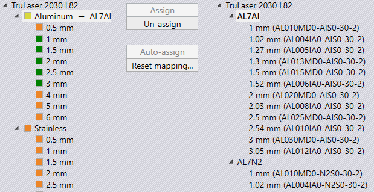

When a new laser/hybrid/waterjet machine is added to the factory route, Praxis checks if the target machine contains the technology table for all available factory raw materials (material + thickness). Praxis prompts user with the page mapping UI, if it does not find them. The page-mapping can then be used to map the factory material to the laser pages.
The page-mapping dialog can also be launched from the machine settings panel using the Map Pages… command and from the sheets factory settings page using MapàCAM Pages command. The later launches the mapping UI for all factory materials.
The mapping dialog displays factory raw-material in the left-side and the laser pages in the right. Mapping can be performed between the material and the pages of the same machine. An orange color means a missing entry implying that the raw material cannot be produced on the target machine.
The mapping can be performed at two levels
When a factory material is mapped to a technology material, Praxis then looks up for the raw-materials (thicknesses) from the factory set into the technology pages. If a match is found, it is displayed mapped (in green status color). Select the material node from left and a double click the material node in right or use Assign command to perform this mapping. As the image displays below, thicknesses 1, 1.5, 2 etc. are found in the technology entries in right. Selecting a mapped node in left highlights its map in right.

The raw material from left can be mapped to the technology pages in the right. To perform this mapping, select the node in left and double click (or select and assign) the page node in right. As displayed in the image below, such maps are displayed with an arrow (→ ) key.

When this command is used the page-lookup is done with a thickness scaled fudge. This is useful in mapping inch thicknesses to metric pages and vice-versa. The fudge value is ~.03mm for 1mm thickness. Hence, this allows a 1mm steel to be mapped to a page created for 0.04 inches (STEEL#18) steel. The command button is disabled if no such fudged mapping is possible. The Reset mapping… command erases the mapping table and resets back to the default. The mapping table is also used to select the appropriate raw-material sheet during the nesting.
Page edit commands have been implemented in the material mapping dialog. These commands can be used to:
 These commands are helpful in setting up technology tables of a new laser machine from an existing, reference machine.
These commands are helpful in setting up technology tables of a new laser machine from an existing, reference machine.
This command can be used to edit an individual page or set of all pages under a material node. When the individual page is edited, you can change parameters like material, thickness etc. The material node can be edited to change machine or material of the whole batch under the node. The edit dialog displays the New and Old values of the selected page(s) and pressing OK applies the changes to the laser database.
This command can be used to copy existing page(s) to new material or machine node. Same UI is presented with controls to changes page parameters.
This command can be used to remove selected page(s).
Press OK to apply the changes to the MetaCAM laser database. Cancel command cancels all edits leaving the config.dat unchanged.